全部
妖怪兽道
人间之里
博丽神社
红魔馆
迷途竹林
魔法森林
妖怪之山
旧地狱
地灵殿
命莲寺
神灵庙
太阳花田
辉针城
莉格露
123
123
123
123
123
匹配
料理
名称[o]
道具[o]
食材
匹配标签[o]
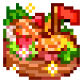
【DLC2】大江户船祭
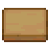
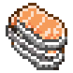 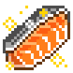 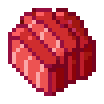 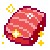 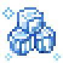
高级
传说
生
惠灵顿牛排
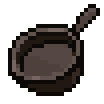
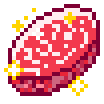 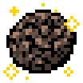 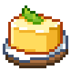 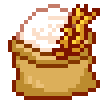
高级
传说
西式
名字
9999-9999
灼热
素
灼热
素
料理
名称
道具
食材
匹配标签